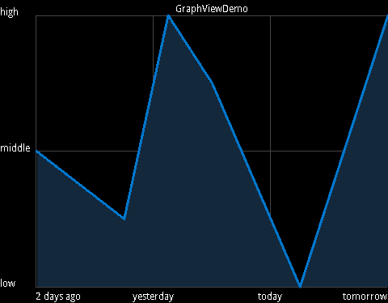
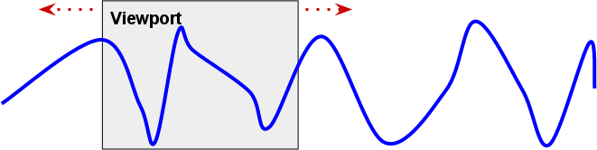
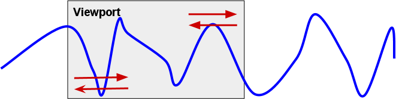
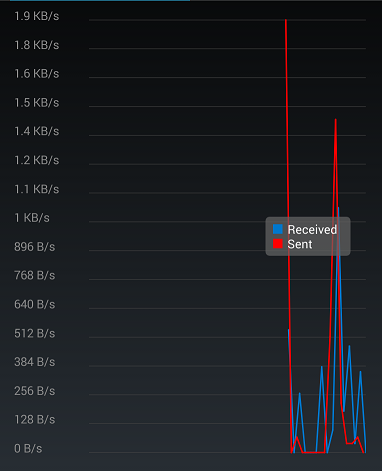

Who uses GraphView


and much more. Missing your app here? Contact me!
GraphView is a library for Android to programmatically create flexible and nice-looking diagramms. It is easy to understand, to integrate and to customize it.
At the moment there are two different types:


There are different ways to integrate GraphView into your project:
compile 'com.jjoe64:graphview:3.1.3'
See how easy it is, to create a simple graph:
// init example series data
GraphViewSeries exampleSeries = new GraphViewSeries(new GraphViewData[] {
new GraphViewData(1, 2.0d)
, new GraphViewData(2, 1.5d)
, new GraphViewData(3, 2.5d)
, new GraphViewData(4, 1.0d)
});
GraphView graphView = new LineGraphView(
this // context
, "GraphViewDemo" // heading
);
graphView.addSeries(exampleSeries); // data
LinearLayout layout = (LinearLayout) findViewById(R.id.layout);
layout.addView(graphView);
Generally, you do not need to take care for the labels. GraphView will automatically generate and format the labels for you, so that the float-numbers won't get to big.
Nevertheless, there are two ways to change the labels: set static labels or set a custom label formatter.
You can set static labels for x- and y-axis. Use the methods setHorizontalLabels and setVerticalLabels.
graphView.setHorizontalLabels(new String[] {"2 days ago", "yesterday", "today", "tomorrow"});
graphView.setVerticalLabels(new String[] {"high", "middle", "low"});

You can overtake the logic for label generation. To do so, you have to implement CustomLabelFormatter and set it via setCustomLabelFormatter.
The method formatLabel will be called. The first parameter is the incoming value to be formatted and the second parameter indicates whether it's a x-value (true) or a y-value (false).
You have to return the formatted value as String.
GraphView graphView = new LineGraphView(this, "example");
graphView.setCustomLabelFormatter(new CustomLabelFormatter() {
@Override
public String formatLabel(double value, boolean isValueX) {
if (isValueX) {
if (value < 5) {
return "small";
} else if (value < 15) {
return "middle";
} else {
return "big";
}
}
return null; // let graphview generate Y-axis label for us
}
});
GraphView automatically calculates the label width/height depending on the text size and thus the label count. But it is possible to set the label count manually and also set the label width. Following methods are important for this:
Class GraphViewStyle:
// set styles graphView.getGraphViewStyle().setGridColor(Color.GREEN); graphView.getGraphViewStyle().setHorizontalLabelsColor(Color.YELLOW); graphView.getGraphViewStyle().setVerticalLabelsColor(Color.RED); graphView.getGraphViewStyle().setTextSize(getResources().getDimension(R.dimen.big)); graphView.getGraphViewStyle().setNumHorizontalLabels(5); graphView.getGraphViewStyle().setNumVerticalLabels(4); graphView.getGraphViewStyle().setVerticalLabelsWidth(300);
Every chart has a viewport. Normally, every data in the series will be displayed. So the viewport size will be set automatically so, that the user can there the whole series.
It's also possible to set a explicit viewport size, so the user can only the a part of the series. The use can then scroll (with the touch move gesture) the graph.
It's also possible (since Android 2.3) to let the user scaling / zoom the viewport with the two-fingers touch scale gesture (Multi-touch).
How to implement:
// draw sin curve
int num = 150;
GraphViewData[] data = new GraphViewData[num];
double v=0;
for (int i=0; i<num; i++) {
v += 0.2;
data[i] = new GraphViewData(i, Math.sin(v));
}
GraphView graphView = new LineGraphView(
this
, "GraphViewDemo"
);
// add data
graphView.addSeries(new GraphViewSeries(data));
// set view port, start=2, size=40
graphView.setViewPort(2, 40);
graphView.setScrollable(true);
// optional - activate scaling / zooming
graphView.setScalable(true);
LinearLayout layout = (LinearLayout) findViewById(R.id.layout);
layout.addView(graphView);
You can also set a fixed Y-Viewport via the method setManualYAxisBounds().
And this is how it will look like: [VIDEO]
As everything, it's very easy to create a chart with multiple series of data. Just create and add more GraphViewSeries objects.
For every series you can set a color and a description. The description will be displayed in the legend.
// first init data
// sin curve
int num = 150;
GraphViewData[] data = new GraphViewData[num];
double v=0;
for (int i=0; i<num; i++) {
v += 0.2;
data[i] = new GraphViewData(i, Math.sin(v));
}
GraphViewSeries seriesSin = new GraphViewSeries("Sinus curve", new GraphViewSeriesStyle(Color.rgb(200, 50, 00), 3), data);
// cos curve
data = new GraphViewData[num];
v=0;
for (int i=0; i<num; i++) {
v += 0.2;
data[i] = new GraphViewData(i, Math.cos(v));
}
GraphViewSeries seriesCos = new GraphViewSeries("Cosinus curve", new GraphViewSeriesStyle(Color.rgb(90, 250, 00), 3), data);
// random curve
num = 1000;
data = new GraphViewData[num];
v=0;
for (int i=0; i<num; i++) {
v += 0.2;
data[i] = new GraphViewData(i, Math.sin(Math.random()*v));
}
GraphViewSeries seriesRnd = new GraphViewSeries("Random curve", null, data);
/*
* create graph
*/
graphView = new LineGraphView(
this
, "GraphViewDemo"
);
// add data
graphView.addSeries(seriesCos);
graphView.addSeries(seriesSin);
graphView.addSeries(seriesRnd);
// optional - set view port, start=2, size=10
graphView.setViewPort(2, 10);
graphView.setScalable(true);
// optional - legend
graphView.setShowLegend(true);
layout = (LinearLayout) findViewById(R.id.layout);
layout.addView(graphView);
To display the chart's legend, just call setShowLegend(true). You can customize the legend's width and alignment.
// set legend graphView.setShowLegend(true); graphView.setLegendAlign(LegendAlign.BOTTOM); graphView.setLegendWidth(200);
The LineGraphView has a special feature: drawBackground. This draws a light background under the diagram stroke.
Since GraphView 3.0 it is possible to update the GraphView in realtime. Just use the methods appendData and resetData of the GraphViewSeries class.
You can register a value dependent color to the GraphViewSeriesStyle.
GraphViewSeriesStyle seriesStyle = new GraphViewSeriesStyle();
seriesStyle.setValueDependentColor(new ValueDependentColor() {
@Override
public int get(GraphViewDataInterface data) {
// the higher the more red
return Color.rgb((int)(150+((data.getY()/3)*100)), (int)(150-((data.getY()/3)*150)), (int)(150-((data.getY()/3)*150)));
}
});
exampleSeries2 = new GraphViewSeries("aaa", seriesStyle, new GraphViewData[] {
new GraphViewData(1, 2.0d)
, new GraphViewData(2, 1.5d)
, new GraphViewData(2.5, 3.0d) // another frequency
, new GraphViewData(3, 2.5d)
, new GraphViewData(4, 1.0d)
, new GraphViewData(5, 3.0d)
});
It's possible to customize the labels' color, size and grid color and more. Get the GraphViewStyle from GraphView and change the attributes:
graphView.getGraphViewStyle().setGridColor(Color.GREEN); graphView.getGraphViewStyle().setHorizontalLabelsColor(Color.YELLOW); graphView.getGraphViewStyle().setVerticalLabelsColor(Color.RED); graphView.getGraphViewStyle().setTextSize(getResources().getDimension(R.dimen.big)); graphView.getGraphViewStyle().setNumHorizontalLabels(5); graphView.getGraphViewStyle().setNumVerticalLabels(4); graphView.getGraphViewStyle().setVerticalLabelsWidth(300);
It's possible to define the grid style. You can choose between HORIZONTAL, VERTICAL and BOTH direction grid lines.
graphView.getGraphViewStyle().setGridStyle(GridStyle.HORIZONTAL);
Copyright (C) 2013 Jonas Gehring
Licensed under the GNU Lesser General Public License (LGPL)
http://www.gnu.org/licenses/lgpl.html
Thanks to Arno den Hond who originally created the first version of GraphView.
Thanks to Muhammad Shahab Hameed who originally added the bar chart extension for this library.
Thanks to many others (see on github)
If you want support or got some questions, you have this options:
Everybody can help with the development of GraphView. You can report issues at Github issues tracker, you can clone it, make changes and push them back, etc..
If you love GraphView and use it in your project, consider making a donation to keep the project alive. Thank you.